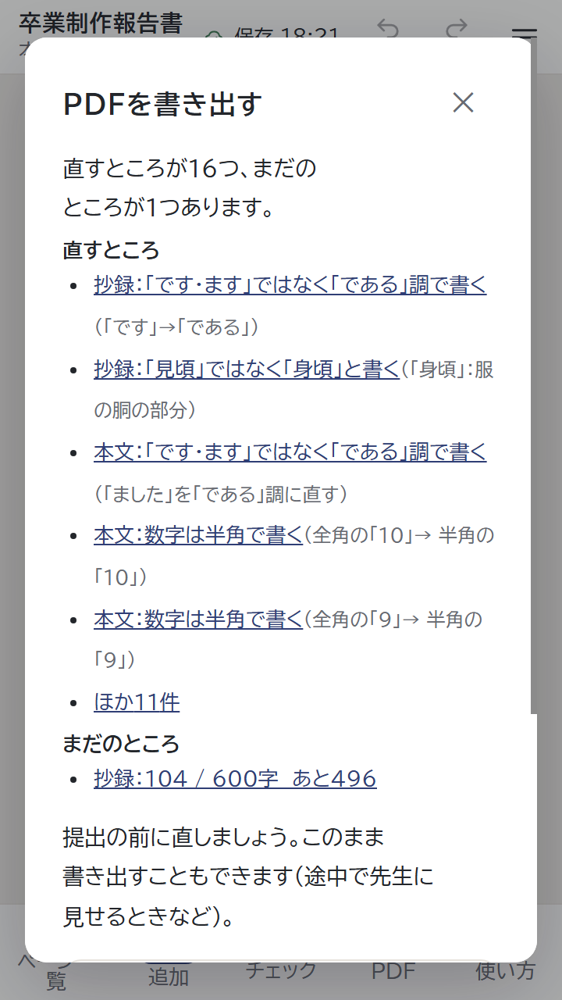
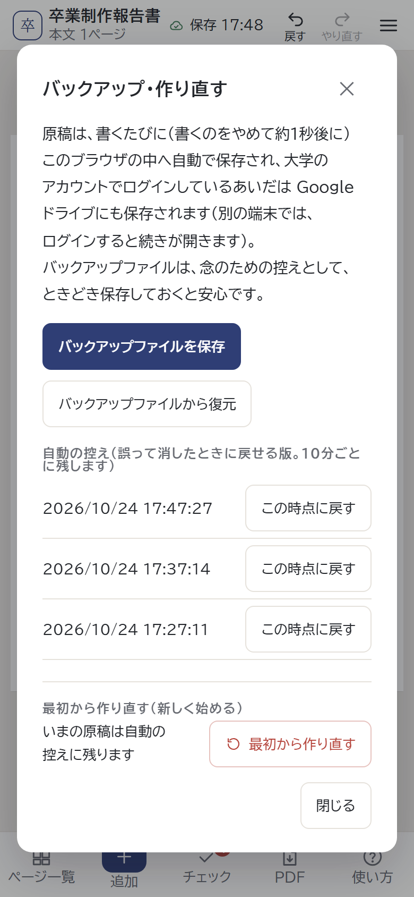
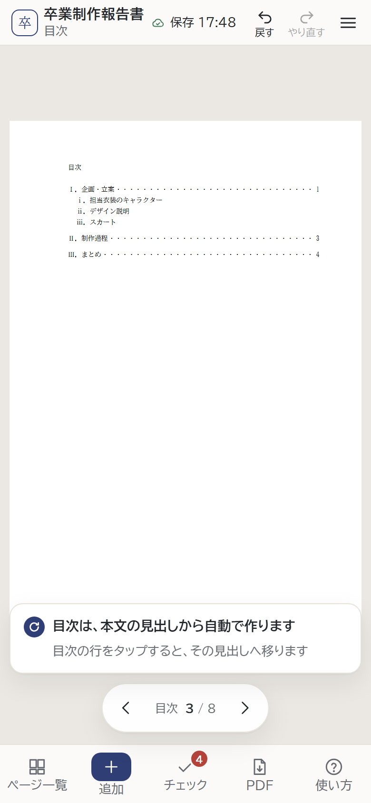
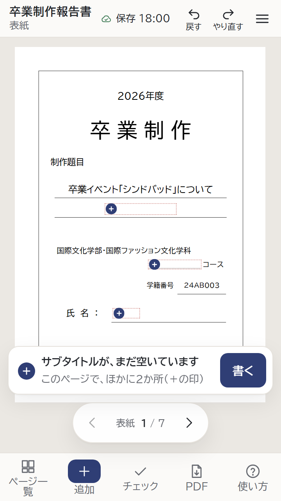

それぞれ「今」と案を並べました。おすすめには印を付けています。① から ⑧ まで、それぞれ選んでください。
「1枚」の並べ方のまま2枚選ぶと、ページが2つに分かれます。あとで「2枚 左右」に変えても、右の枠は空いたまま。
2枚目は2ページ目へ。並べ方を変えても詰まらない。
枠が増える並べ方にすると、次のページの写真を詰め、空いたページは消します（「戻す」で戻せる）。
空のページにまとめて選ぶと、枚数に合う並べ方にします（2枚→左右、3〜4枚→4枚。5枚からは次のページへ）。
まとめて選んだときは枚数に合わせ、あとで並べ方を変えたときも詰めます。どちらの順で操作しても、空いた枠・ページが残りません。
今は段落のまま「3．スカート。」と「。」が付き、さらに「体言止めを使わない」と出ます。見出しを文に直してしまいかねません（「ⅲ．スカート」「iiiスカート」は、今も小見出しになります）。
「。」が付き、チェックに「体言止めを使わない」。
見出しらしい短い行で Enter を押すと「。」を付けずに聞きます。「小見出しにする」で、ツールの形（ⅲ．スカート）に。
「3．」「(1)」「第4章」「■」などで始まる短い行は、自動で小見出しに（知らせに［戻す］）。段落の書き出しを誤って直すことも。
「。」は付けず、チェックの要確認に「見出しのようです。見出しは『追加』→『小見出し』で」と出します。
「PDFを書き出す」の窓は、直すところが多いと「PDF を作る」が画面の外に出ます（Word の確認の「読み込む」も同じ）。窓の中を下へずらさないと押せません。
一覧が長く、ボタンは下へずらすと出てくる。

ボタンの段を窓の下に止め、一覧だけを上下に動かします（PDF・Word の確認・バックアップの窓）。
直すところは数だけ出し、「一覧を見る」で開きます。ボタンは今の位置のまま。
控えが時刻だけで並ぶので、どれに戻せばよいか分かりません。「最初から作り直す」の直後の控えは空の原稿で、選ぶと空に戻ります。
時刻と「この時点に戻す」だけ。

時刻の下に「本文○ページ・図○枚」。作り直す・Word を読み込む・ほかの端末の原稿に替える前の控えには札を付けます。
さらに「いまより図が2枚少ない」のように、今の原稿との違いを一言。
章の途中の段落を書いているときに「追加」→「大見出し」を押すと、新しい章はその章のいちばん後ろに入ります。「Ⅱ．〇〇」と打って Enter のときは、その場所で章が分かれ、結果が違います。
2つ目の段落を書いているとき → 章の後ろに新しい章。
打って作るときと同じく、書いている段落のすぐ後ろに新しい章。その後ろの段落は新しい章へ。
入る場所は今のまま。「追加」の欄の「大見出し」の下に「この章の後ろに、新しい章を足します」と書きます。
紙面の目次の行は高さ 11px ほど、改ページの印は 12px ほどで、ねらった所を押しにくいです。チェックの欄の「このままにする（確認済み）」も 16px ほど。
字の大きさの分だけ押せる。

目次の行・改ページの印・「このままにする」・知らせの［戻す］の、押せる範囲を上下に広げます（点線の所。画面の見た目は変わりません）。
目次のページの帯に「見出しへ移る」ボタン。押すと、大きなボタンで見出しが並ぶ欄が出ます（ほかは A と同じ）。
はじめての案内を閉じた直後に、画面の上の「戻す」を押すと、選んだコースが空に、もう1回押すと自動で入った学籍番号が消えます。
「戻す」1回でコースが空に（「＋」の印）。

コースを選ぶ・学籍番号が自動で入る、までを「はじめの状態」にします。開いた直後は「戻す」が薄く、何か書いてから押せます（コースは表紙から選び直せます）。
コースの選び直しも「戻す」で取り消せる（今の動き）。
ほかに見つかったこと（下の「チェック」の赤い数はエラーだけで、「直すところ」の数は要確認も数える、など）は、今回は変えません。気になるものがあれば言ってください。